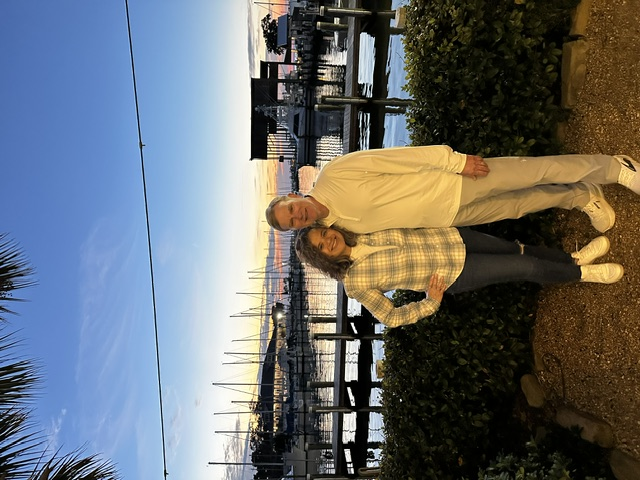
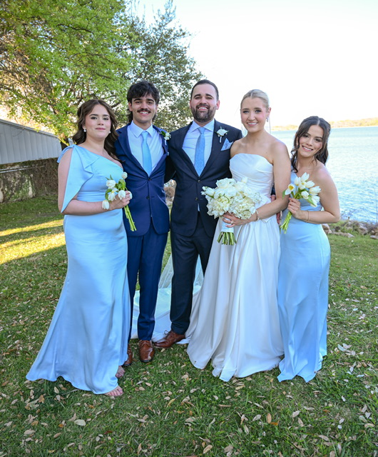
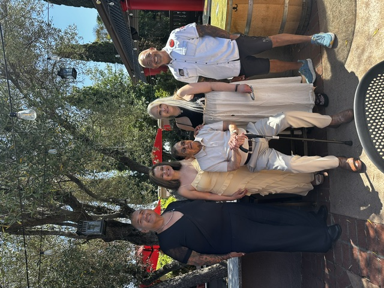
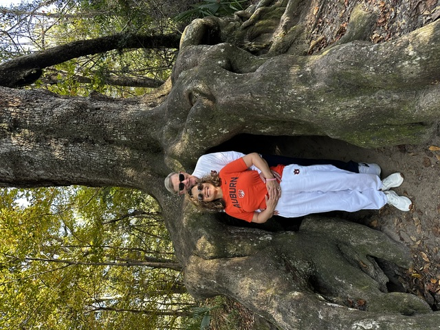
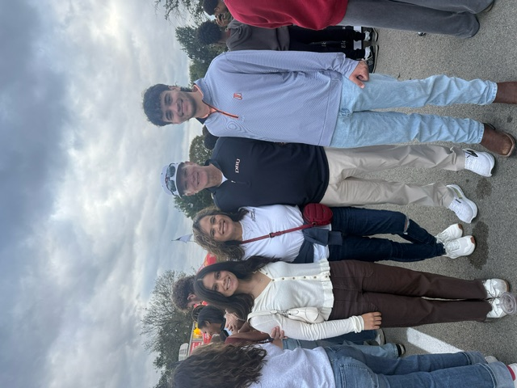
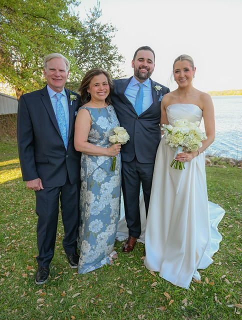

Fairhope Marina, Fairhope, Alabama Randy and Kat Randy is my faovrite man in the world. He has heart and soul of gold. He is my best friend, my soul mate, my partner in life and my love. He is the most amazing man I have ever known. He is a hard worker and a great provider. He is wonderful father and great role model. He is also a great cook and loves to grill. He is also a great singer and loves to sing in the car. He is also a great dancer and loves to dance with me in the kitchen. He is also a great listener and always has time for me. He is also a great encourager and always has the right words to say. He is also a great teacher and always has the right advice to give. He is also a great friend and always has my back. He is also a great husband, always makes me feel loved and special. He great friend to all and Semper Fidelis, the Epitome of a United States Marine.
Introducing Mr. and Mrs. Kaelib Thomas The Thomas Children, Kaelib, Katlyn, Karoline and R.J. This is a significant day in our family. Kaelib, our first born child married his sweetheart Miss Caitlin Madden on a beautiful Spring evening this past March. This photo is of the beautiful couple and our three other children Katlyn, Karoline and R.J. This will be a day I will never forget and one I will carry in my heart for the remainder of my life.
Happy Birthday Dad! Celebration My dad's 92nd birthday celebration. This past August, we celebrated his special day with our family at his favorite chinese restuarant in Napa, California. It was an intimate celebration with my siblings and our families. It was great to see the joy on dad's face to have all four of his kids there with him. Each visit with him is a special time for me since we have moved to Texas.
Hiding Tree in Spanish Fort, Alabama Special Time Randy and I at the "Hiding Tree in Spanish Fort, Alabama. What is special about this photo is was taken two weeks ago while we were on our daughters 21st birthday trip to the beach. We had a great time and it was a special time for us to be together.
Homecoming 2026 DBU HOCO Homecoming 2026 at Dallas Baptist University. This photo was taken this afternoon. It is special to me because it captures a moment where were able to spend time with R.J.at his university during a special event. There are always so many great activities happening there during this day with a parade, games, food and lots of community.
Mr.and Mrs. Thomas x's 2 Welcome to the family Catie! Our parent photo at Kaelib's wedding. This is a photo of Randy and I with Kaelib and his bride Catie on their wedding day. It was just taken just moments are she became an official part of our family.Everything about that day was beautiful. The groom, the bride, the location and the festivities. What a wonderful day.